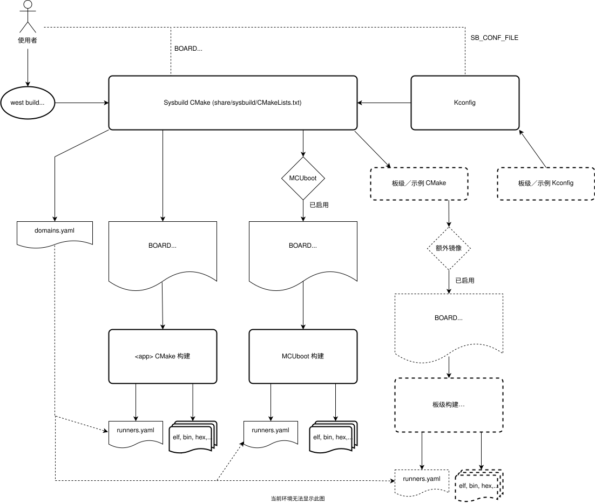

系统构建（Sysbuild）
非官方简体中文译本 · 英文基线 4.5.99 · D01 · 全站目录（94 篇） · D 批目录 · 本页英文原文
sysbuild 是上层构建系统，可以把一个或多个 Zephyr 构建系统以及可选的其他构建系统组织成一个分层构建系统。
例如，可以一起构建 Zephyr 应用和 MCUboot 引导程序（bootloader），将二者烧写到设备上，再进行调试。
sysbuild 至少配置并构建一个 Zephyr 应用；还可按需添加任意多个工程。这些工程既可以是其他 Zephyr 应用，也可以采用其他构建方式。
和 Zephyr 的构建系统（build system）一样，sysbuild 使用 CMake 编写，并采用 Kconfig。
术语定义
以下是本文用到的几个关键概念：
- 单镜像构建（single-image build）
sysbuild 只创建和管理一个 Zephyr 应用的构建系统。
- 多镜像构建（multi-image build）
sysbuild 管理多个构建系统。这里使用“镜像”一词，是因为目标通常是从各个构建系统生成固件应用镜像的二进制文件。
- 域（domain）
sysbuild 管理的每一个 Zephyr CMake 构建系统都是一个域。
- 多域（multi-domain）
sysbuild 管理多个 Zephyr CMake 构建系统（即多个域）。
架构概览
下图展示了 sysbuild 的输入、输出和用户接口：



图中体现了以下特性：
既可通过 west build 运行 sysbuild，也可直接使用
cmake。sysbuild 可让各构建系统生成应用镜像，例如图中的 ELF、BIN 和 HEX 文件。
通过配置变量，可以配置 sysbuild 本身及其管理的任一构建系统。变量使用命名空间，以便送达正确的构建系统；某些变量（例如
BOARD）可由多个构建系统共享。sysbuild 自身也通过 Kconfig 配置。例如，通过 sysbuild 的 Kconfig 文件，既可要求构建 MCUboot，也可要求把主应用构建、链接为能够由 MCUboot 启动的镜像。
sysbuild 与 west 的构建、烧写与调试命令集成。它管理各 Zephyr 构建系统的配置选项，特别是各自的
runners.yaml文件，再将信息汇总到由 sysbuild 生成和管理的domains.yaml中，统一描述各域的烧写和调试方式。构建名称以目标名和下划线开头。例如，sysbuild 目标使用
sysbuild_；若启用了 MCUboot，则它的目标使用mcuboot_。menuconfig 等目标也可带前缀运行，例如用 Ninja 执行ninja sysbuild_menuconfig配置 sysbuild，或用 Make 执行make mcuboot_menuconfig。
使用 sysbuild 构建
如上所述，既可以通过 west build，也可以通过 cmake 运行 sysbuild。
下面是一个示例。详细说明见west build documentation中的系统构建（sysbuild，多域构建）。
west build -b reel_board --sysbuild samples/hello_world
提示
要让 west build 从现在起默认使用 --sysbuild，请运行：
west config build.sysbuild True
sysbuild 既支持单镜像也支持多镜像构建，因此可一直启用，无须每次区分构建类型。
要关闭此默认行为，请在生成构建系统前运行：
west config build.sysbuild False
若只想对某一次 west build 关闭 sysbuild，请运行：
west build --no-sysbuild ...
下面是使用 CMake 与 Ninja 的示例。
cmake -Bbuild -GNinja -DBOARD=reel_board -DAPP_DIR=samples/hello_world share/sysbuild
ninja -Cbuild
直接通过 CMake 使用 sysbuild 时，源目录必须指向 sysbuild 工程，并额外传入 -DAPP_DIR=<path-to-sample> 或设置环境变量 APP_DIR。APP_DIR 是 sysbuild 管理的主 Zephyr 应用的路径。
提示
使用 CMake 和 Ninja 时，可通过环境变量 CMAKE_BUILD_PARALLEL_LEVEL 和 VERBOSE 控制构建过程。
要设置所有 sysbuild 镜像的 Ninja 并发作业数，请设置环境变量 CMAKE_BUILD_PARALLEL_LEVEL，再用 cmake --build 启动构建。例如：
CMAKE_BUILD_PARALLEL_LEVEL=<n> cmake --build .
要显示所有镜像的详细构建输出，请使用：
VERBOSE=1 cmake --build .
配置命名空间
不用 sysbuild 构建单个 Zephyr 应用时，在命令行通过 -D<var>=<value> 或 -DCONFIG_<var>=<value> 提供的 CMake 缓存设置和 Kconfig 选项全部由该应用的 Zephyr 构建系统处理。
sysbuild 组合多个 Zephyr 构建系统时，有些 Kconfig 设置只属于 sysbuild，不用于任何一个应用。为区分作用对象，配置变量设有命名空间。按以下各节所述写法，可将设置交给 sysbuild 自身或指定的 Zephyr 应用。
下例在启用 MCUboot 的情况下构建 Hello World，并对两个镜像都采用面向调试的优化：
west build -b reel_board --sysbuild samples/hello_world -- -DSB_CONFIG_BOOTLOADER_MCUBOOT=y -DCONFIG_DEBUG_OPTIMIZATIONS=y -Dmcuboot_CONFIG_DEBUG_OPTIMIZATIONS=y
cmake -Bbuild -GNinja -DBOARD=reel_board -DAPP_DIR=samples/hello_world -DSB_CONFIG_BOOTLOADER_MCUBOOT=y -DCONFIG_DEBUG_OPTIMIZATIONS=y -Dmcuboot_CONFIG_DEBUG_OPTIMIZATIONS=y share/sysbuild
ninja -Cbuild
详见以下各节。
CMake 变量的命名空间
命令行通过 -D<var>=<value> 向 CMake 传递变量，也可通过 -DCONFIG_<var>=<value> 或 -D<namespace>_CONFIG_<var>=<value> 设置 Kconfig 选项。
sysbuild 是构建入口，本身也用 CMake 编写，因此所有 CMake 变量都先由 sysbuild 处理。
sysbuild 为每个域创建一个命名空间，前缀就是该域的应用名称。详见向 sysbuild 添加 Zephyr 应用。
要在命名空间 <namespace> 中设置变量 <var>，请使用以下语法：
-D<namespace>_<var>=<value>
例如，要在 my_sample 应用的构建系统中把 CMake 变量 FOO 设为 BAR，请运行：
west build --sysbuild ... -- -Dmy_sample_FOO=BAR
cmake -Dmy_sample_FOO=BAR ...
Kconfig 的命名空间
要将 sysbuild 的 Kconfig 选项 <var> 设为 <value>，请使用以下语法：
-DSB_CONFIG_<var>=<value>
上例中，SB_CONFIG 是 sysbuild 自身 Kconfig 选项的命名空间前缀。
要设置某个 Zephyr 应用的 Kconfig 选项，则使用：
-D<namespace>_CONFIG_<var>=<value>
这里的 <namespace> 是上文CMake 变量的命名空间所述的应用名。
例如，要在 my_sample 应用的构建系统中把 Kconfig 选项 FOO 设为 BAR，请运行：
west build --sysbuild ... -- -Dmy_sample_CONFIG_FOO=BAR
cmake -Dmy_sample_CONFIG_FOO=BAR ...
提示
若不写 <namespace>，Kconfig 设置就传给主 Zephyr 应用 my_sample。
因此传入 -DCONFIG_<var>=<value> 与传入 -Dmy_sample_CONFIG_<var>=<value> 等价。
这样，无论是否启用 sysbuild，都可以用相同的 CMake 语法设置主应用的 Kconfig 值。例如，以下命令的效果相同：
west build -b <board> my_sample -- -DCONFIG_FOO=BAR
west build -b <board> --sysbuild my_sample -- -DCONFIG_FOO=BAR
使用 west flash 烧写 sysbuild 镜像
可使用 west flash 烧写 sysbuild 构建的应用。
对含多个镜像的构建执行 west flash 时，镜像按顺序逐个烧写，--runner jlink 等额外参数会传给每次调用。
详见 多域烧写。
使用 west debug 调试 sysbuild 应用
无论是否使用 sysbuild，都可以用 west debug 调试主应用。调试主示例的步骤见现有的 west debug 指南。
要调试其他域（即其他 Zephyr 应用），例如 mcuboot，请使用 --domain 参数：
west debug --domain mcuboot
详见 多域调试。
构建带 MCUboot 的示例
sysbuild 原生支持 MCUboot。
要用 MCUboot 构建 hello_world 等示例，请启用 MCUboot，然后按如下步骤构建并烧写：
west build -b reel_board --sysbuild samples/hello_world -- -DSB_CONFIG_BOOTLOADER_MCUBOOT=y
cmake -Bbuild -GNinja -DBOARD=reel_board -DAPP_DIR=samples/hello_world -DSB_CONFIG_BOOTLOADER_MCUBOOT=y share/sysbuild
ninja -Cbuild
这会针对 reel_board 构建 hello_world 和 mcuboot，再将 mcuboot 和 hello_world 两个镜像烧写到板上。
在 Zephyr 中使用 MCUboot 的详细说明，见 MCUboot 网站的搭配 Zephyr 使用 MCUboot页面。
说明
已弃用的 MCUboot Kconfig 选项 CONFIG_ZEPHYR_TRY_MASS_ERASE 会在烧写时执行全片擦除。启用它时，即使只烧写 MCUboot（例如执行 west flash --domain mcuboot），也可能擦除整个闪存，包括主应用镜像。
sysbuild 的 Kconfig 配置文件
可用配置文件为某个应用设置 sysbuild 的 Kconfig 选项。默认情况下，sysbuild 在应用顶层目录中查找 sysbuild.conf。
下例的 sysbuild.conf 文件使该应用每次通过 sysbuild 构建时都同时构建并烧写 MCUboot：
<home>/application
├── CMakeLists.txt
├── prj.conf
└── sysbuild.conf
SB_CONFIG_BOOTLOADER_MCUBOOT=y
可以用 CMake 构建设置 -DSB_CONF_FILE=<sysbuild-conf-file> 指定要使用的配置文件。
例如，创建 sysbuild-mcuboot.conf，再在用 sysbuild 构建时指明该文件：
west build -b reel_board --sysbuild samples/hello_world -- -DSB_CONF_FILE=sysbuild-mcuboot.conf
cmake -Bbuild -GNinja -DBOARD=reel_board -DAPP_DIR=samples/hello_world -DSB_CONF_FILE=sysbuild-mcuboot.conf share/sysbuild
ninja -Cbuild
sysbuild 构建目标
对于以下配置工具，sysbuild 会为每个镜像（包括 sysbuild 本身）创建构建目标：
menuconfig
hardenconfig
guiconfig
主应用的目标与不使用 sysbuild 时一样，不需要前缀。对于其他镜像（包括 sysbuild 自身），用 Ninja 或 Make 调用时要加上镜像名及下划线，如 sysbuild_ 或 mcuboot_。sysbuild 没有映射的构建目标如何调用，见特定镜像的构建目标。
特定镜像的构建目标
并非每个镜像目标都会在 sysbuild 层生成带前缀的目标。例如 ram_report、rom_report、footprint、puncover 和 pahole 就没有。使用 Trusted Firmware 时，以 tfm_ 和 bl2_ 开头的目标也不可直接调用，如 tfm_rom_report 和 bl2_ram_report。要运行它们，把该镜像的构建目录及目标名一起传给 west、Ninja 或 Make 即可。
假设已用 west 和 sysbuild 启用并构建 MCUboot，构建目录位于默认的 build，则可如下运行 mcuboot 的 rom_report 目标：
west build -d build/mcuboot -t rom_report
对于使用 TF-M 目标的 TF-M 工程，请指定应用构建目录，如下所示：
west build -d build/<app_name> -t tfm_rom_report
假设启用 MCUboot 后通过 sysbuild 用 cmake 配置、用 ninja 构建，则可如下运行 mcuboot 的 rom_report 目标：
ninja -C mcuboot rom_report
对于使用 TF-M 目标的 TF-M 工程，请指定应用构建目录，如下所示：
ninja -C <app_name> -t tfm_rom_report
假设启用 MCUboot 后通过 sysbuild 用 cmake 配置、用 make 构建，则可如下运行 mcuboot 的 rom_report 目标：
make -C mcuboot rom_report
对于使用 TF-M 目标的 TF-M 工程，请指定应用构建目录，如下所示：
make -C <app_name> -t tfm_rom_report
向 sysbuild 添加 Zephyr 应用
使用 ExternalZephyrProject_Add() 可将 Zephyr 应用添加为 sysbuild 域。在应用的 sysbuild.cmake 文件或其他确定会在 sysbuild 的 CMake 调用中执行的文件中调用此函数。
通过 ExternalZephyrVariantProject_Add() 还可复制现有镜像，添加配置略有不同的变体。例如，仅更改镜像选择的闪存节点，其他配置与基础镜像完全相同。使用这种方式时，不会为该变体在 sysbuild 层或镜像内另建 menuconfig、guiconfig、hardenconfig、traceconfig 等 Kconfig 目标；请在基础镜像中查看或调整配置。
目标为同一开发板
要把 my_sample 作为另一个 sysbuild 域，且目标板与主镜像相同，请参考：
ExternalZephyrProject_Add(
APPLICATION my_sample
SOURCE_DIR <path-to>/my_sample
)
例如，开发板要求连同主应用一起构建和烧写 SoC 专用引导程序时，可使用这种方式。
目标为不同开发板
在 sysbuild 和 Zephyr 的 CMake 构建系统中，“开发板”可能是指：
搭载单核 SoC 的一块实体开发板；
多核 SoC 开发板上的一个特定内核，例如 nRF5340 DK；
搭载多个 SoC 的开发板上的一个特定 SoC，例如 nRF9160 DK 和 nRF9160 DK - nRF52840。
例如，若主应用面向 mps2/an521/cpu0，辅助应用则面向 mps2/an521/cpu1，请按下例构造 CMake 函数调用：
ExternalZephyrProject_Add(
APPLICATION my_sample
SOURCE_DIR <path-to>/my_sample
BOARD mps2/an521/cpu1
)
当辅助应用要和主应用一起构建、烧写，但运行在 SoC 的另一个核上时，这种方式就很有用。
通过 Kconfig 按条件选择目标
可通过 Kconfig 控制是否将其他应用纳入 sysbuild 域。
如果额外镜像属于特定开发板或应用，可以添加 sysbuild.cmake 和 Kconfig.sysbuild 两个文件。
对于应用，目录结构如下：
<home>/application
├── CMakeLists.txt
├── prj.conf
├── Kconfig.sysbuild
└── sysbuild.cmake
上例中，sysbuild.cmake 的内容如下：
if(SB_CONFIG_SECOND_SAMPLE)
ExternalZephyrProject_Add(
APPLICATION second_sample
SOURCE_DIR <path-to>/second_sample
)
endif()
Kconfig.sysbuild 的内容如下：
source "sysbuild/Kconfig"
config SECOND_SAMPLE
bool "Second sample"
default y
这样默认会包含 second_sample，但仍可通过 Kconfig 选项 SECOND_SAMPLE 禁用它。
设置 sysbuild Kconfig 选项的更多说明见Kconfig 的命名空间。
只构建，不自动烧写
可按以下方式将 my_sample 标记为只构建的应用：
ExternalZephyrProject_Add(
APPLICATION my_sample
SOURCE_DIR <path-to>/my_sample
BUILD_ONLY TRUE
)
my_sample 仍随 sysbuild 一起构建，但不进入 west flash 的默认烧写序列。该域的输出可另作他用，例如生成设备固件升级用的次镜像，或合并多个镜像。
也可以把 TRUE 替换为 CMake 中的另一个布尔常量，例如 Kconfig 选项，使 my_sample 仅在满足条件时只构建。
说明
仍可用 west flash --domain my_sample 手动烧写标记为只构建的应用；BUILD_ONLY 仅控制 west flash 的默认行为。
Zephyr 应用配置
向 sysbuild 添加一个 Zephyr 应用（如 MCUboot）时，默认使用该应用自身的配置文件。
集成多个应用时，往往需要调整额外镜像的配置。
sysbuild 允许添加 Kconfig 片段和设备树覆盖文件（devicetree overlays），与应用默认配置共同生效。也可以替换应用配置目录，完全接管某个镜像的配置。
Zephyr 应用的 Kconfig 片段和设备树覆盖文件
在主应用目录下的 sysbuild 子目录中创建 Kconfig 片段或设备树覆盖文件，分别命名为 <image>.conf 或 <image>.overlay。例如，主应用包含 my_sample 时，可创建 sysbuild/my_sample.conf 或覆盖文件 sysbuild/my_sample.overlay。
Kconfig 片段示例：
# sysbuild/my_sample.conf
CONFIG_FOO=n
Zephyr 应用配置目录
在主应用目录中创建 sysbuild/<image>/ 目录。构建 <image> 时，便将该目录用作 APPLICATION_CONFIG_DIR。例如，主应用包含 my_sample 时，可创建 sysbuild/my_sample/ 并照常放入配置文件：
<home>/application
├── CMakeLists.txt
├── prj.conf
└── sysbuild
└── my_sample
├── prj.conf
├── app.overlay
└── boards
├── <board_A>.conf
├── <board_A>.overlay
├── <board_B>.conf
└── <board_B>.overlay
将 my_sample 包含在构建中时，使用 sysbuild/my_sample/ 下的配置文件，而忽略 my_sample 原来的默认配置文件。
这样便能完全控制镜像与 application 集成时采用的配置。
sysbuild 对文件后缀的支持
sysbuild 支持通过 FILE_SUFFIX 选择文件后缀（应用侧用法见文件后缀）。全局选项会传给所有镜像；若带指定后缀的镜像配置文件存在，则按此后缀选用，而不使用构建类型来选择。
以下列工程为例：
<home>/application
├── CMakeLists.txt
├── prj.conf
├── sysbuild.conf
├── sysbuild_test_key.conf
└── sysbuild
├── mcuboot.conf
├── mcuboot_max_log.conf
└── my_sample.conf
若未定义
FILE_SUFFIX，且包含mcuboot和my_sample两个镜像，mcuboot使用 Kconfig 片段mcuboot.conf，my_sample使用my_sample.conf；sysbuild 自身使用sysbuild.conf。若
FILE_SUFFIX为max_log且包含mcuboot、my_sample，则mcuboot使用mcuboot_max_log.conf；my_sample回退到无后缀的my_sample.conf，sysbuild 自身也回退到无后缀的sysbuild.conf。若
FILE_SUFFIX为test_key且包含mcuboot、my_sample，则mcuboot和my_sample分别回退到无后缀的mcuboot.conf和my_sample.conf，而 sysbuild 自身使用sysbuild_test_key.conf。这样可以切换 sysbuild 配置，例如让 MCUboot 和主应用签名同时改用另一把密钥。
也可以为变量加上镜像名前缀，使 FILE_SUFFIX 仅作用于单个镜像：
west build -b reel_board --sysbuild file_suffix_example -- -DSB_CONFIG_BOOTLOADER_MCUBOOT=y -Dmcuboot_FILE_SUFFIX="max_log"
cmake -Bbuild -GNinja -DBOARD=reel_board -DAPP_DIR=<app_dir> -DSB_CONFIG_BOOTLOADER_MCUBOOT=y -Dmcuboot_FILE_SUFFIX="max_log" share/sysbuild
ninja -Cbuild
为 Zephyr 应用设置依赖顺序
多镜像构建有时要求按特定顺序配置或烧写应用。例如，一个应用要使用另一应用的构建系统提供的信息，就应先设置配置依赖。还可单独设置烧写依赖，控制 west flash 的镜像顺序，以满足 SoC、烧写后端（runner）等对先后顺序的要求。
默认情况下，sysbuild 按 CMake 处理 ExternalZephyrProject_Add() 调用的顺序进行配置和烧写。可用 sysbuild_add_dependencies() 调整顺序，用法与 CMake 标准函数 add_dependencies() 相似。
下面为 my_sample 添加配置依赖：
sysbuild_add_dependencies(IMAGE CONFIGURE my_sample sample_a sample_b)
在一次调用中构建这些域时，sysbuild 会先为 sample_a 和 sample_b 运行 CMake（两者之间不指定顺序），然后才配置 my_sample。
若要设置烧写依赖，则写成：
sysbuild_add_dependencies(IMAGE FLASH my_sample sample_a sample_b)
在一次调用中烧写这些域时，my_sample 要等 sample_a 和 sample_b 均烧写完才烧写；后两者之间不指定顺序。
说明
不能为只构建的应用添加烧写依赖。如果创建 my_sample 时设置了 BUILD_ONLY TRUE，上面的 sysbuild_add_dependencies() 调用将报错。
合并 HEX 文件
启用 SB_CONFIG_MERGED_HEX_FILES 后，sysbuild 为工程中每个不同的开发板目标各生成一个合并 HEX 文件，命名为 merged_<NORMALIZED_BOARD_TARGET>.hex。这适合生成部署用的生产镜像，前提是所有镜像都输出 HEX。如果同一开发板目标的各镜像实际用于不同的设备（例如为三块板各构建一个测试镜像），应保持此选项关闭。文件按配置的烧写顺序合并；若地址重叠且数据冲突，后合并文件的数据会覆盖先前数据。排序方法见为 Zephyr 应用设置依赖顺序。
向 sysbuild 添加非 Zephyr 应用
可用标准 CMake 模块 ExternalProject 将非 Zephyr 应用纳入多镜像构建。具体用法见 CMake 文档。
使用 ExternalProject 时，非 Zephyr 应用会随 sysbuild 一起构建，但 west flash 和 west debug 不会识别该应用，必须自行烧写和调试。
配置 sysbuild 的内部状态
sysbuild 本身是独立的 CMake 工程。它像 Zephyr 应用一样运行并初始化，但使用自己的 CMake 代码。因此，在应用 CMakeLists.txt 中设置某些变量（如 BOARD_ROOT）不会对 sysbuild 生效。要通过模块或自定义 sysbuild 工程文件 <application>/sysbuild/CMakeLists.txt 进行设置，例如：
# Place pre-sysbuild configuration items here
# For changing configuration that sysbuild itself uses:
# set(<var> <value>)
# list(APPEND <list> <value>)
# For changing configuration of other images:
# set(<image>_<var> <value> CACHE INTERNAL "<description>")
# Finds the sysbuild project and includes it with the new configuration
find_package(Sysbuild REQUIRED HINTS $ENV{ZEPHYR_BASE})
project(sysbuild LANGUAGES)
添加 BOARD_ROOT 的示例：
list(APPEND BOARD_ROOT ${CMAKE_CURRENT_SOURCE_DIR}/../<extra-board-root>)
find_package(Sysbuild REQUIRED HINTS $ENV{ZEPHYR_BASE})
project(sysbuild LANGUAGES)
这样会将开发板根目录传给工程中的所有镜像，无需在每个镜像的 CMakeLists.txt 中重复设置。
扩展 sysbuild
其他模块可以扩展 sysbuild，增加功能、配置或镜像，例如支持另一种引导程序或外部签名方法。
与普通模块（modules）一样，模块可添加自定义 CMake 或 Kconfig 文件，使其被工程中的每个镜像包含。如果要配置整个 sysbuild 工程，则使用sysbuild 专用模块扩展文件引入 CMake 和 Kconfig，例如为特定开发板或 SoC 添加自定义镜像。
sysbuild 与 CMake 预设
CMake presets 可与 sysbuild 一起使用，但并非所有预设宏都会按预期生效。
说明
在 sysbuild 中使用 CMake 预设要求 CMake 3.27 或更高版本。
如系统构建（Sysbuild）所述，sysbuild 处于上层，因此由它读取并处理 CMake 预设，再将结果传给应用。
使用预设运行 sysbuild。
下例使用 release 预设。详情见west build documentation中的系统构建（sysbuild，多域构建）。
west build -b reel_board --sysbuild -- --preset=release samples/hello_world
下面是使用 CMake 与 Ninja 的示例。
APP_DIR=samples/hello_world cmake -Bbuild -GNinja -DBOARD=reel_board --preset=release share/sysbuild
ninja -Cbuild
使用 CMake 预设时，必须在环境中设置 APP_DIR，以便 sysbuild 从主应用源码目录引入 CMakePresets.json。
说明
sysbuild 将顶层 CMake 工程切换到自身目录，预设也从该处解析。应用预设按原样被包含，因此相对路径以及相对于源码目录展开的宏（如 ${sourceDir}）将相对于 share/sysbuild，而不是应用目录。
要编写相对于应用目录的可移植路径，可使用 ${fileDir} 宏。